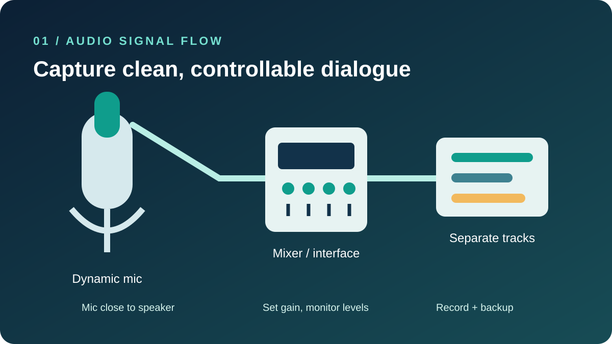
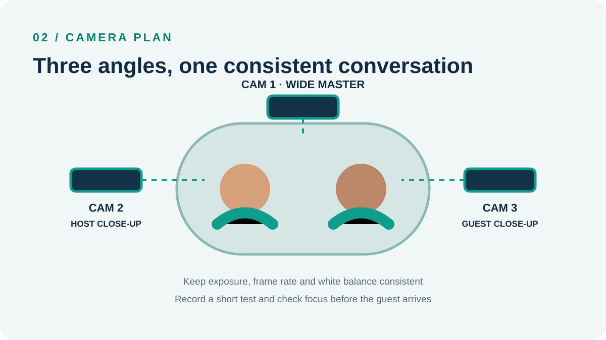
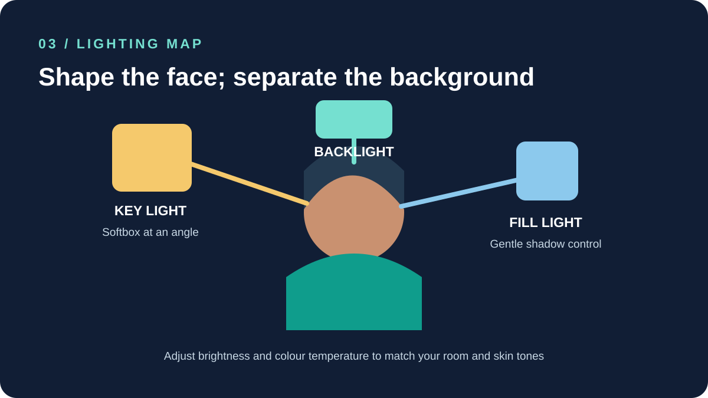

Before purchasing equipment, decide your format: a solo show, a two-person interview or a multi-speaker panel. Also decide whether you will record for post-production or stream live, and how you plan to repurpose clips for social media. These choices determine the microphones, camera angles, room layout and recording workflow you actually need.
1. Audio comes first: choose microphones that suit the room
People may tolerate a simple camera image, but echo, clipping and hard-to-understand speech make a conversation tiring. Prioritise microphone technique and room noise before spending heavily on cameras.
Dynamic or condenser?
Dynamic microphones: Often practical in rooms with natural reflections or mild background noise because they are typically used close to the speaker. Examples include the Shure SM7B, RØDE PodMic and Audio-Technica AT2040.
Condenser microphones: Can capture detailed vocals and work very well in quiet, acoustically treated spaces, but may pick up fan noise, traffic and room echo more easily. Neither type is automatically better; room acoustics, microphone pattern and placement matter.
Use a mixer or audio interface when you need separate control
For multi-guest shows, a dedicated audio interface or podcast mixer—such as the RØDECaster Pro II or Zoom PodTrak P8—can provide independent gain control, headphone monitoring and separate track recording. A simpler interface may be enough for a small two-mic setup. Check the number of mic inputs and headphone outputs, computer connectivity, isolated-track recording and whether the preamps provide enough clean gain for your microphones.
Mic placement and speaking technique
Position the microphone roughly 4–6 inches (10–15 cm) from the speaker’s mouth at a slight off-axis angle. This helps reduce harsh breath blasts from “P” and “B” sounds. Add a pop filter or foam windscreen if needed, and ask guests to maintain a consistent distance while speaking. Adjust the starting position to suit the microphone and the speaker’s voice.

2. Build a multi-camera setup for natural edits
A single camera angle works well for solo episodes. For interviews, a two- or three-camera setup makes long conversations more dynamic to watch and edit. Two clean, well-matched angles are better than three cameras with inconsistent exposure or focus.
Plan the camera positions
- Camera 1 – wide master: shows both host and guest, the table and enough of the set to establish the conversation.
- Camera 2 – host close-up: captures the host's questions and reactions, usually framed from chest or mid-torso upward.
- Camera 3 – guest close-up: captures the guest's explanations and expressions. A second close-up is optional for a simpler budget.

Keep settings consistent
Where possible, use manual exposure and lock focus or use a reliable face/eye tracking mode after testing. Match frame rate across cameras (for example, 25 fps or 30 fps). A traditional 180-degree shutter guideline suggests a shutter speed near double the frame rate: around 1/50 sec at 25 fps or 1/60 sec at 30 fps. At 24 fps, 1/50 sec is a common practical setting. Match white balance using a neutral reference rather than relying on auto white balance, and keep picture profiles and colour settings consistent. Check flicker under the actual room lights before recording.
3. Light faces with shape, softness and separation
Bright overhead room lights can create deep eye shadows and mixed colour temperatures. A simple three-point approach is a useful starting plan, though the exact position and power depend on the room and the number of speakers.
- Key light: a soft LED source or softbox placed to one side of the camera and angled toward the speaker. A larger diffused source placed at a sensible distance usually creates softer shadows.
- Fill light or reflector: placed on the opposite side to reduce contrast. It can be dimmer than the key; a white reflector may be enough in a small room.
- Backlight or hair light: placed safely behind and above the speaker to create subtle separation from the background. Avoid shining it into the camera lens.
Practical background lights, a warm desk lamp or a restrained brand-colour accent can add depth. Keep background brightness below the subject's face and avoid distracting animated lights. Set white balance after choosing the lights, then check that skin tones look natural on every camera.

4. Improve room acoustics and design a comfortable set
Good acoustics start with listening to the room before buying equipment. Acoustic treatment reduces reflections inside the room, while soundproofing helps block sound from entering or escaping and may require construction work. Identify the actual problem first: echo, traffic, fans or air-conditioning noise.
- Reduce reflections: use properly placed acoustic panels, thick curtains, rugs and filled bookshelves where appropriate. Foam alone will not solve every low-frequency or isolation problem.
- Control noise: switch off avoidable fans, silence phones, move noisy equipment away from microphones and test the air conditioner before guests arrive. Do not compromise ventilation or safe room temperature for a recording.
- Plan the background: leave some space between the speakers and the wall if the room allows. A few feet can help create visual depth, but there is no universal 4–6-foot requirement.
- Keep the set tidy: secure cables, tape or route trip hazards, position boom arms safely and keep drinks away from electrical equipment.
5. Recording, backup and post-production workflow
A smooth post-production workflow begins before the guest sits down. Run a short test recording and play it back to catch problems early. Confirm that every camera is recording, audio levels are healthy and enough storage and battery power are available.
- Record redundant audio: where possible, capture isolated tracks on the mixer or recorder and a reference track in the camera or computer. Confirm that both recordings are actually running.
- Synchronise cameras: start with a visible and audible clap, or use timecode or waveform sync in your editing software. Keep the original files until the final delivery is approved.
- Protect the media: use reliable, correctly rated memory cards, monitor recording status and make a second copy of the files before formatting cards. A backup is useful only if you verify that the copied files open.
- Edit for the audience: balance dialogue, remove distracting pauses without changing meaning, switch camera angles intentionally and check names, captions and graphics.
- Repurpose carefully: select 5–8 short clips only when the episode contains that many complete, useful moments. Reframe vertically, keep context, proofread captions and link back to the full episode.
6. Common mistakes to avoid before the first shoot
- Buying cameras before testing the room's echo and background noise.
- Placing microphones too far away or allowing speakers to move constantly off-axis.
- Mixing auto white balance, frame rates or exposure settings across cameras.
- Ignoring mains-light flicker, focus errors, card capacity or battery life.
- Recording only one copy of important audio or footage.
- Skipping a short test recording and a complete playback check.
7. A practical pre-shoot checklist
- Confirm speakers, episode format and recording length
- Check microphones, cables, stands and headphones
- Set gain and test for clipping or hum
- Frame and focus every camera
- Match frame rate, exposure and white balance
- Check light placement and room reflections
- Confirm cards, batteries and available storage
- Record a test and listen/watch it back
- Start backup recording and make a sync clap
- Copy and verify media after the session
Frequently asked questions
How many cameras do I need for a video podcast?
One camera can work for a solo show. Two cameras can cover a two-person conversation with a wide shot and a second angle; three cameras allow separate host and guest close-ups. Choose based on crew, budget and editing time.
Are dynamic microphones always better than condenser microphones?
No. Dynamic microphones are often convenient in less-treated rooms when used close to the speaker, while condensers can be excellent in quieter, treated spaces. Room acoustics, microphone pattern, placement and voice matter more than the label alone.
Can I start a podcast without a dedicated studio?
Yes. A quiet room with controlled reflections, stable lighting, close microphones and a repeatable camera position can be a practical starting point. Improve the setup as your recording schedule and audience grow.
How can one episode support social media?
A full episode may contain several short clips, but select only moments that make sense on their own. Add accurate captions, vertical framing and a clear route to the complete episode.
Final thoughts: build a repeatable setup
Consistent video podcasts come from simple, repeatable habits: clean audio, controlled lighting, steady framing and reliable backups. Start with a setup you can execute smoothly every week, then refine your equipment and production workflow over time.
Creator Support Amravati can discuss podcast shooting, multi-camera production, studio support and episode editing based on your format and deliverables. Explore our Podcast Production service, Video & Photo Production, or Video Editing service.